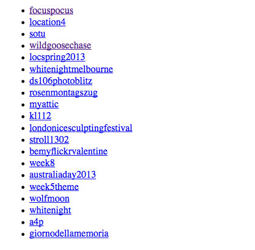

Pre requirements
Have your App registered in "Flickr APP Garden" and Have API key ready.
Method: flickr.tags.getHotList
Tutorial
This tutorial will help you make cURL request to using flickr API to get Hot Tags
Arguments
api_key (Required)
Your API application key.
period (Optional)
The period for which to fetch hot tags. Valid values are day and week (defaults to day).
count (Optional)
The number of tags to return. Defaults to 20. Maximum allowed value is 200.
Example URL request format
URL = "https://api.flickr.com/services/rest/?&method=flickr.tags.getHotList&api_key=[Your API Key Here]&period=[day,week]&count=[0-200]";
Complete Sample Code
/*
* API Call Request URL
*/
$url = "https://api.flickr.com/services/rest/?";
/*
* Method We are using for this tutorial flickr.tags.getHotList
*/
$url.= "&method=flickr.tags.getHotList";
/*
* Put Your API Key Here
*/
$url.= "&api_key=[Your API Key Here]";b
/*
* Argument Period accepts two values [Day,Week]
* by default it is day
*/
$url.= "&period=week";
/*
* Following two makes sure response is in JSON format
*/
$url.= "&format=json";
$url.= "&nojsoncallback=1";
$response = json_decode(file_get_contents($url));
$photo_array = $response->photos->photo;
echo '<ul>';
foreach ($response->hottags->tag as $value) {
/*
* Popular Tags are have been hyper linked
* to Flickr Search query page
*/
echo "<li><a target='_blank'
href='https://www.flickr.com/search/?
q=$value->_content'>".$value->_content."</a></li>";
}
echo "</ul>";
Screenshot

Download the source code
Flickr - Get Popular Tags